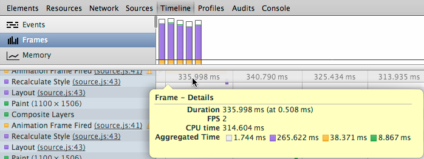
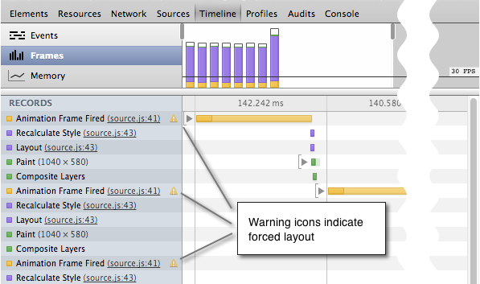
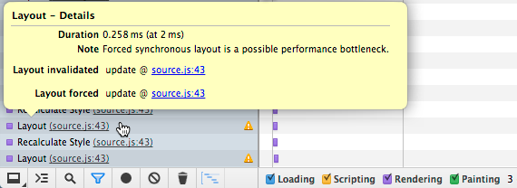
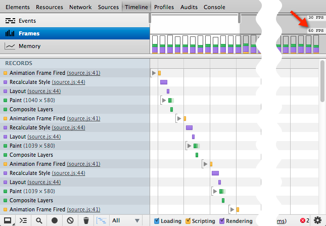

06_01_Timeline_demo_Diagnosing_forced_synchronous_layouts
Table of Contents
1 Timeline demo: Diagnosing forced synchronous layouts 強制同期レイアウトを診断 (Last updated 2013-11-04)
このデモでは、「強制同期レイアウト」と呼ばれるパフォーマンスのボトルネックの種類を識別するために、Timeline を使用する方法を示します。 デモアプリケーションは、 requestAnimationFrame() (フレームベース(構造に基づいた, frame-based)のアニメーションを行なうための推奨されたアプローチ requestAnimationFrame API: now with sub-millisecond precision - HTML5Rocks Updates ) を前後に使用して、いくつかの画像をアニメーションします。 しかし、アニメーションの実行としての、吃音と素早く方向を変えるのかなりの量があります 我々は何が起こっているかを診断するには、Timeline を使用します。 Frames モードと強制非同期レイアウトを使用する方法の詳細については、Using the Timeline における Locating forced synchronous layouts (強制同期レイアウトのロケーティング, 配置する?? ) を参照してください。
1.1 Make a recording 記録をつくる
まず、アニメーションの記録を作ります。
- アニメーションを開始するには、[Start] をクリックします。
- このページの Timeline パネルを開き、[Frames] ビューに移動します。
- Timeline の Record ボタンをクリックします。
- 1 〜 2 秒（ 10 から 12 のフレームが記録される）後に録音を停止し、アニメーションを停止するには [Stop] をクリックします。
1.2 Analyze the recording 記録を分析する
最初の数フレームの記録を見ると、各 1 が完了するまでに 300 ms 以上かかっていることは明らかです。 フレームの 1 つの上にマウスを合わせると、ポップアップは、フレームに関する追加の詳細を示して表示されます。

「 Animation Frame Fired 」 レコードの位置を検索し、強制同期のレイアウト (forced synchronous layout) のことを示す、横の黄色の警告アイコンに注目してください。 アイコンは、わずかにその子レコードの 1 ではなく、このレコード自体よりも、問題のあるコードが含まれていることを示す 淡色 表示されます その子を表示するには、「 Animation Frame Fired 」を展開します。

子レコードは、 Recalculate Style (スタイルの再計算) と Layout (レイアウト) のレコードの長い、繰り返しのパターンを示している。 レイアウトレコードはそれぞれ、順番に、ページ上の各イメージに見合う offsetTop の値を要求する requestAnimationFrame() ハンドラの結果で、あるスタイル再計算の結果です。 Layout レコードの 1 つの上にマウスオーバーして、Layout Forced (レイアウトの強制) プロパティの横 sources.js のリンクをクリックします。

Sources パネルは update() 関数のソースファイルで 43 行で表示されます。ここは、 requestAnimationCallback() コールバックハンドラでです。
// Animation loop
function update(timestamp) {
for(var m = 0; m < movers.length; m++) {
movers[m].style.left = ((Math.sin(movers[m].offsetTop + timestamp/1000)+1) * 500) + 'px';
}
raf = window.requestAnimationFrame(update);
};
私たちは、すべてのアニメーション・フレーム中にページ・レイアウトを強要することが事態を遅くすることであることを知っています。 今、私たちは、DevToolsの中でその問題を直接解決しようとすることができます。
1.3 Apply fix within DevTools DevTools内で修正プログラムを適用する
今、何がパフォーマンス問題の原因かという考えを持つので、 私たちは Sources パネル中で JavaScript ファイルを直接修正し、すぐに変更をテストすることができる。
- 先ほど開いた Sources パネルで、次のコードで 43 行を置き換えます。
movers[m].style.left = ((Math.sin(m + timestamp/1000)+1) * 500) + 'px';
このバージョンは、レイアウト依存プロパティ (offsetWidth) への保持配列の代わりに、 そのインデックスにおける各画像の左スタイルプロパティ内を計算します。
- [Cmd-S] または [Ctrl-S] を押して変更内容を保存します。
1.4 Verify with another recording 別の記録で確認する
アニメーションは以前より明白に速くより滑らかです。しかし、別の記録で違いを測定することを常にお勧めします。 それは、以下の記録のようになります。
